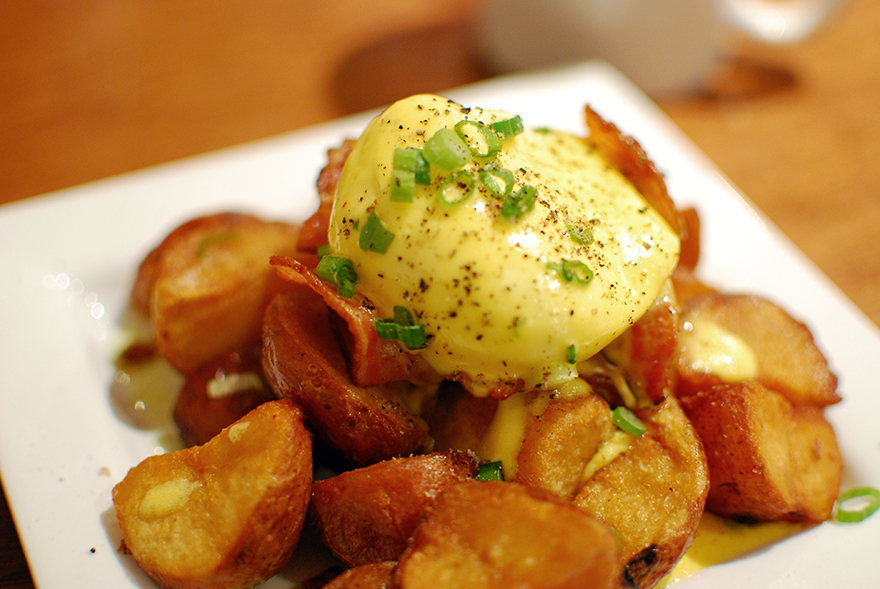

An Exploration of Vancouver Eats
Eggs Benedict with a Twist

From humble beginnings to a shining success, Yolks started out by selling their special eggs benedicts in the streets of Vancouver during the office lunch rushes. From their, the demand for their perfectly poached eggs with their lemon truffle potatoes have skyrocketed so much so that they needed to open a free-standing restaurant to accommodate all their returning customers and their new clientele.
On their menu, customers are able to customize their own eggs benedict. This ranges from the proteins that you can include in your dish (These include bacon, ham, salmon and for vegetarians they also have portobello mushrooms and avocados) to the base of the dish (These include the original english muffin, their famous truffle lemon hash browns or gluten free buns). They place the base first and then the protein and they add the star of the show, which are their perfectly poached eggs. Once the eggs are placed on top, you can add hollandaise sauce to complete the dish.
Yolks is most famous for their eggs benedict but they also have other dishes that deserve attention. Their chicken and waffles for example, are to die for. The perfect marriage between the crunchiness of the chicken to the soft, fluffy texture of the waffles. They also add maple syrup on top of the waffles and the chicken and the maple flavour completes the dish.
You can visit their website here.